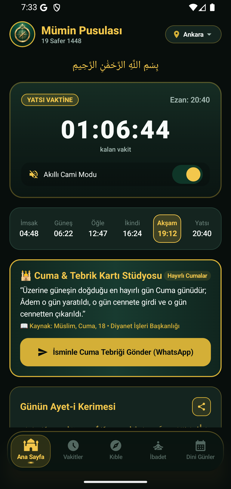

Maneviyatınızı Zamana ve
Yöne Mühürleyin.
Gereksiz kalabalıktan ve reklam karmaşasından uzak; derin uyku (Doze Mode) alarmları, haptik kıble pusulası, kaza takibi ve zikirmatik ile donatılmış modern İslami yaşam asistanınız.

Namaz Vakitlerini & Günün Maneviyatını Deneyimleyin
Bulunduğunuz şehri seçin; saniyesi saniyesine işleyen geri sayım halkasını ve hassas vakit tablosunu keşfedin.
"Kullarım sana beni sorduklarında bilsinler ki şüphesiz ben onlara çok yakınım. Bana dua edenin duasına icabet ederim..."
— Bakara Suresi, 186. Âyet"Ameller ancak niyetlere göredir. Herkes için ancak niyet ettiği şey vardır."
— Sahîh-i Buhârî, Bed'ü'l-Vahy, 1"Ey Rabbimiz! Bize dünyada da iyilik ve güzellik ver, ahirette de iyilik ve güzellik ver ve bizi cehennem azabından koru."
— Bakara Suresi, 201. ÂyetSensör Füzyonlu
Haptik Kıble Pusulası
Cihazınızın ivmeölçer ve manyetometre sensörlerini mikrosaniye hassasiyetle birleştiren füzyon motoru sayesinde, Kâbe-i Muazzama koordinatlarına (21.4225° N, 39.8262° E) anında yönelin.
-
Haptik Titreşimli Kilitlenme:
Kıble açısına ulaştığınızda telefonunuz hafifçe titreyerek ekrana bakmadan doğru yönü teyit eder.
-
Manyetik Sapma Düzeltmesi (WMM):
Dünya manyetik modelini kullanarak bulunduğunuz konuma özel gerçek kuzey sapmasını otomatik hesaplar.
-
İnternetsiz ve GPS Bağımsız:
Çölde, uçakta veya bodrum katlarda; internet bağlantısı olmaksızın kusursuz çalışır.
Her Detayı Sizin İçin Özenle Tasarlandı
Mümin Pusulası, günlük manevi ritminizi zahmetsizce sürdürmeniz için gereken tüm araçları tek bir hafif uygulamada toplar.
Doze Mode Korumalı Ezan Alarmları
Android cihazlar gece derin uykuya (`Doze Mode`) geçtiğinde birçok uygulama bildirim gönderemez. Mümin Pusulası, doğrudan yerel `AlarmManager` mimarisiyle çalışır; sabah ezanı dahil hiçbir vakti asla kaçırmazsınız.
Haptik Dijital Zikirmatik
Ekrana bakmadan tüm yüzeye dokunarak zikir çekin. Her 33'lük turda özel ritmik titreşim ile saymayı kolaylaştırır, kaldığınız yeri otomatik saklar.
Cuma Tebrik & WhatsApp Stüdyosu
Cuma günleri otomatik aktifleşen altın & zümrüt tebrik kartları. Adınızı ekleyin, tek tıkla şık formatlanmış metinle sevdiklerinizin WhatsApp'ına gönderin.
Kaza Çetelesi & Zinciri Kırma
5 vakit, Vitir ve Oruç kaza borçlarınızı (+ / -) tek dokunuşla tutun. "İbadet Zinciri (Streak)" ile günlük düzeninizi istatistiklerle güçlendirin.
Ramazan Özel: İftar & Sahur Sayacı
Gündüz iftara, gece sahura (imsak) kalan süreyi sayan dinamik sayaç. İftar duaları ve oruç niyetleri daima elinizin altında.
Akıllı Cami Modu
Ezan vakti girdiğinde telefonunuzu otomatik olarak sessize / titreşime alır. Namaz tamamlandıktan (30 dakika sonra) sonra cihazı eski ses moduna geri döndürür.
Hicri & Dini Günler Takvimi
Hicri ve miladi takvim hesaplamalarına göre tüm kandiller, Ramazan Bayramı, Kurban Bayramı ve Aşure günü için kalan gün sayaçları.
Sade, Akıcı ve Göz Yormayan Tasarım
Gözlerinizi dinlendiren karanlık mod zemin üzerine zümrüt ve altın detaylarla inşa edilmiş temiz deneyim.
Mümin Pusulası vs Klasik Uygulamalar
Piyasadaki hantal ve reklam dolu uygulamaların aksine, Mümin Pusulası sadece ibadetinize odaklanır.
| Özellik / Kriter |
Mümin Pusulası
|
Klasik Uygulamalar |
|---|---|---|
| Pil ve Şarj Tüketimi | 🔋 < %1 Günlük Pil Dostu | ⚠️ %8 - %15 Yüksek Şarj Tüketimi |
| Uygulama Boyutu | ⚡ < 12 MB (Saf Kotlin Native) | 💾 80 - 150 MB (Hantal kütüphaneler) |
| Derin Uyku (Doze Mode) Alarmı | 🛡️ Kesintisiz Çalar (AlarmManager) | ❌ Sistem Uyurken Çalmayan Bildirimler |
| İnternet Bağlantı Zorunluluğu | 📶 %100 Çevrimdışı Çalışabilir | ⚠️ Sürekli İnternet & Veri Talebi |
| Kıble Hassasiyeti | 🧭 Sensör Füzyonu & Haptik Titreşim | ❌ Titreşimsiz, Gecikmeli Pusula |
| Kullanıcı Gizliliği | 🔒 Konum Asla Paylaşılmaz, Cihazda Kalır | ⚠️ 3. Taraf Reklam Ağlarına Konum Takibi |
| Reklam Deneyimi | ✨ Maneviyata Saygılı, Temiz Arayüz | ❌ Aniden Çıkan Tam Ekran Sesli Reklamlar |
Aklınıza Takılan Sorular ve Yanıtları
Mümin Pusulası hakkında merak ettiğiniz tüm detaylar.
Evet, kesinlikle! Mümin Pusulası, yüksek hassasiyetli astronomik güneş açısı ve koordinat hesaplama motorunu yerel olarak cihazınızda barındırır. Uygulamayı bir kez açıp şehrinizi belirledikten sonra 365 gün boyunca tek bir bayt dahi internete bağlanmadan vakitleri saniyesi saniyesine güvenle hesaplar.
Pek çok ezan uygulamasının en büyük eksiği, Android'in derin uyku (`Doze Mode`) sistemine takılıp sabah bildirimlerini geciktirmesidir. Mümin Pusulası, sistem seviyesinde AlarmManager.setExactAndAllowWhileIdle() protokolüyle tasarlanmıştır. Telefonunuz ekranı kapalı, kilitli ve derin uykuda olsa bile belirlediğiniz vakitte saniyesi şaşmadan çalar.
Tüm pusula uygulamalarında olduğu gibi, telefonunuzun manyetik sensörünü kalibre etmek için cihazı havada 8 (sonsuzluk) işareti çizecek şekilde birkaç saniye çevirmeniz yeterlidir. Mümin Pusulası, Dünya Manyetik Modeli (WMM) ile gerçek coğrafi kuzey sapmasını düzelterek Kâbe koordinatına tam kilitlendiğinde haptik titreşimle onay verir.
Her Cuma günü ana sayfada otomatik olarak altın ve zümrüt detaylı özel Cuma Tebrik Kartı aktifleşir. Kendi isminizi ekleyebilir ve tek bir dokunuşla hazır, estetik formatlanmış Cuma hadisi ve tebrik mesajını doğrudan WhatsApp veya diğer mesajlaşma uygulamaları üzerinden sevdiklerinizle paylaşabilirsiniz.
Hayır! Mümin Pusulası, kullanıcı gizliliğine tam saygı duyan bir mimariye sahiptir. Konum bilginiz sadece namaz vakitlerini ve kıble açısını cihazınızın kendi hafızasında hesaplamak için kullanılır; hiçbir uzak sunucuya veya 3. taraf veri analitiği şirketine asla iletilmez.